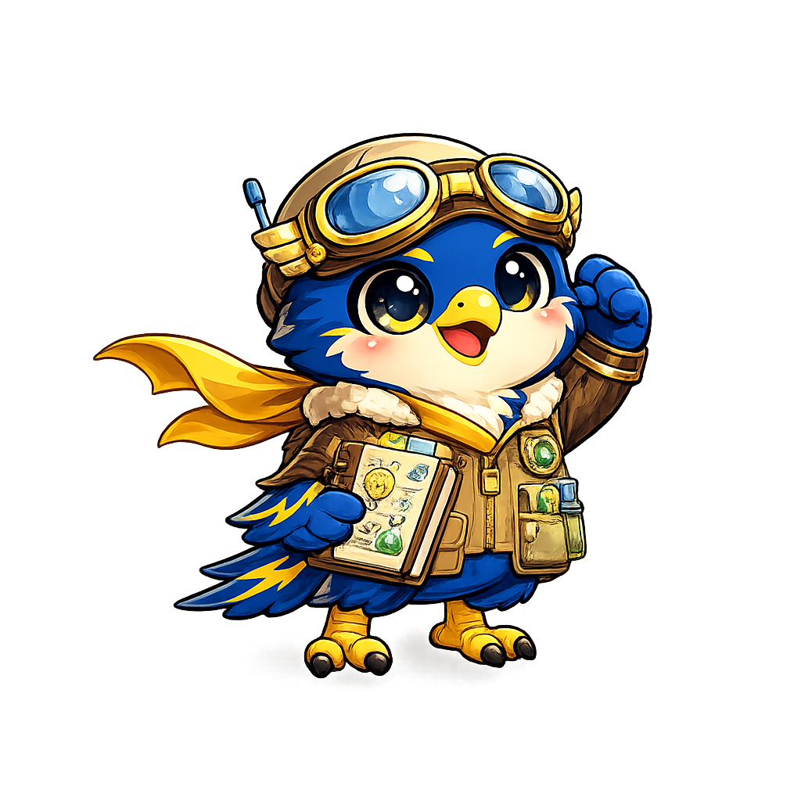

STATION 1
FIELD LAB
BADGES 0
FIELD LAB
Pick a science mission. Read the clues. Collect evidence. Get ready to build your one-pager.
Scientist gear ready.

CHOOSE
Pick your topic.

REPORT READY
You collected the science clues. Now use your worksheet to build your one-pager.
BADGE EARNED